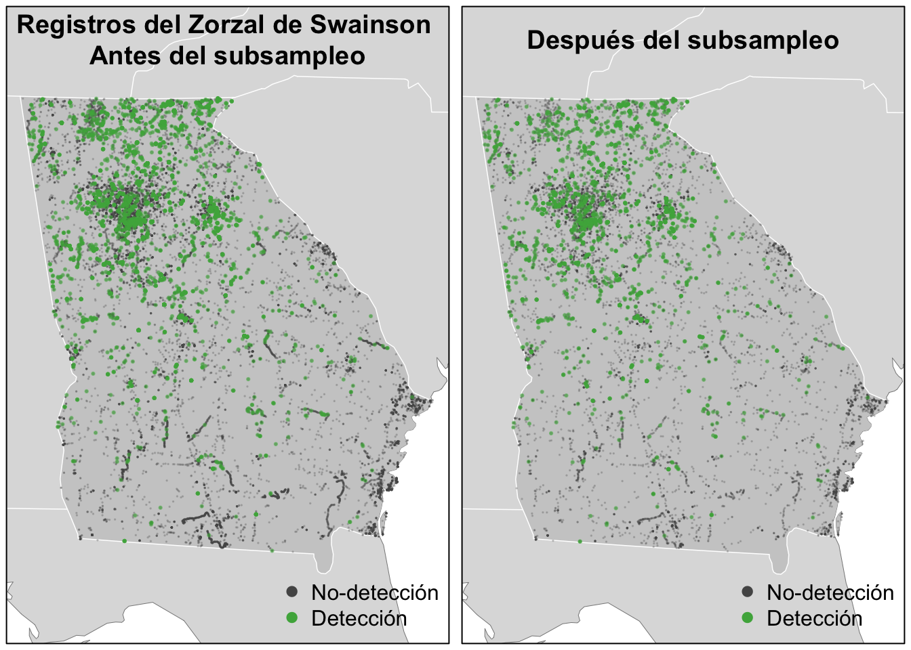
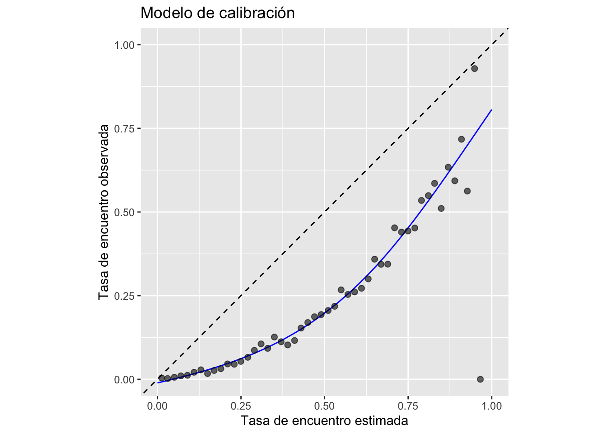
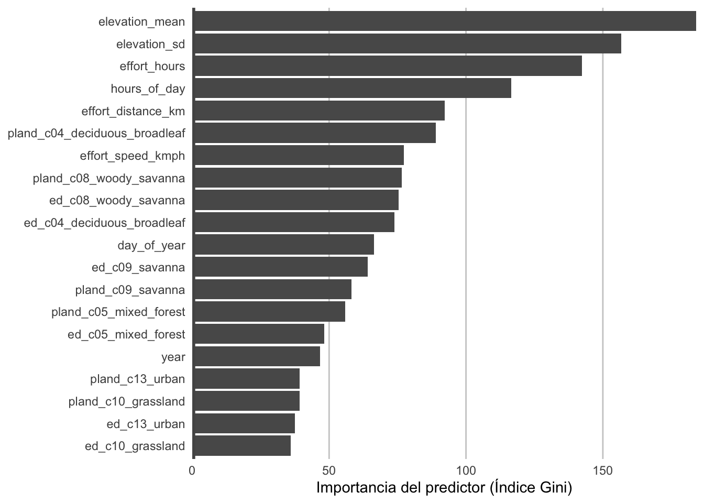
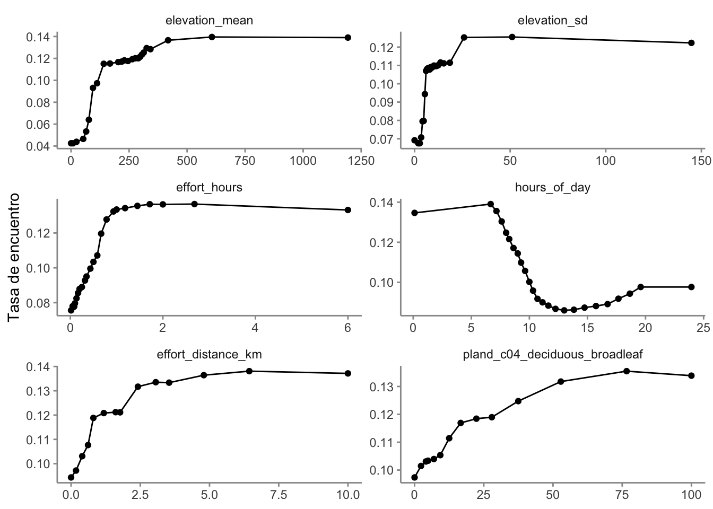
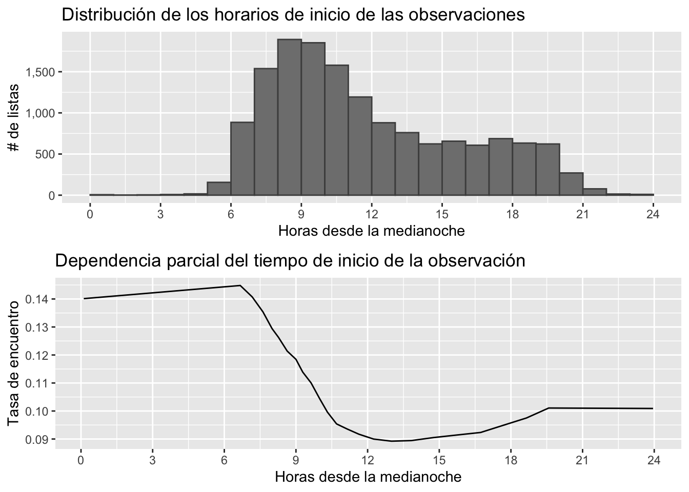
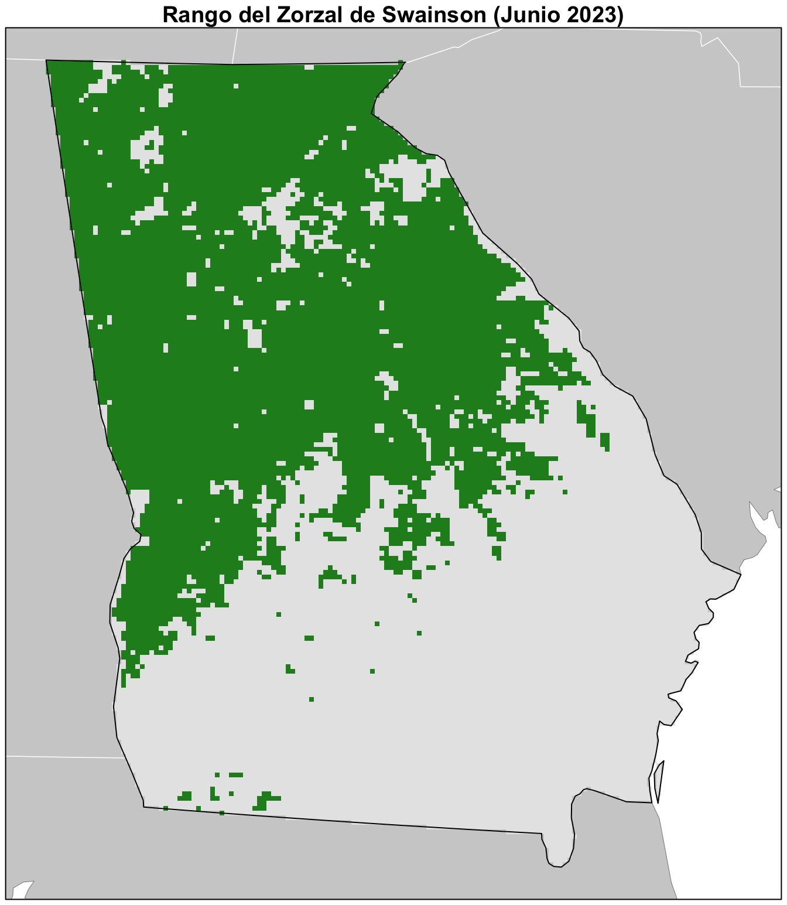
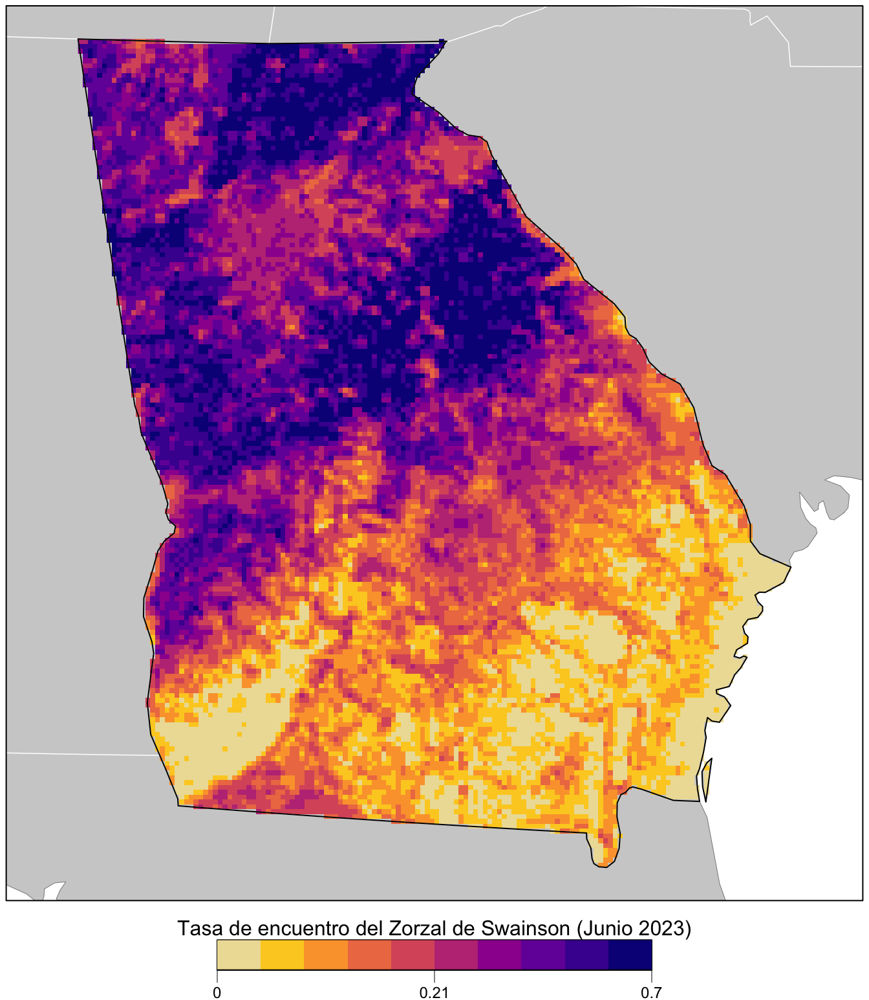
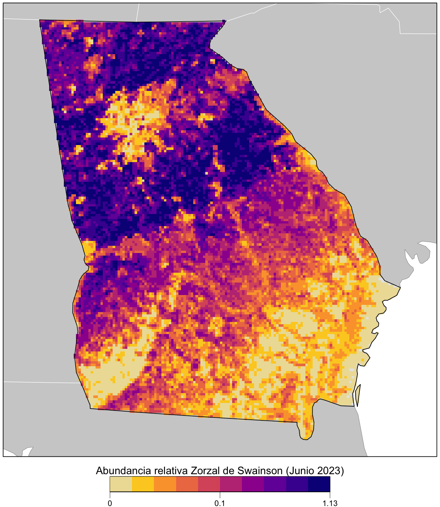

library(dplyr)
library(ebirdst)
library(fields)
library(ggplot2)
library(gridExtra)
library(lubridate)
library(mccf1)
library(ranger)
library(readr)
library(scam)
library(sf)
library(terra)
library(tidyr)
# fijar un número semilla para reproducibilidad
set.seed(1)
# Variables ambientales: cobertura de suelo y altitud
env_vars <- read_csv("data/environmental-variables_checklists_jun_us-ga.csv")
# Datos de eBird rellenados con ceros combinados con datos ambientales
checklists_env <- read_csv("data/checklists-zf_woothr_jun_us-ga.csv") |>
inner_join(env_vars, by = "checklist_id")
# cuadrícula de predicción
pred_grid <- read_csv("data/environmental-variables_prediction-grid_us-ga.csv")
# plantilla ráster para la cuadrícula
r <- rast("data/prediction-grid_us-ga.tif")
# obtener el sistema de referencia de coordenadas de la cuadrícula de predicción
crs <- st_crs(r)
# cargar datos GIS para la creación de mapas
study_region <- read_sf("data/gis-data.gpkg", "ne_states") |>
filter(state_code == "US-GA") |>
st_transform(crs = crs) |>
st_geometry()
ne_land <- read_sf("data/gis-data.gpkg", "ne_land") |>
st_transform(crs = crs) |>
st_geometry()
ne_country_lines <- read_sf("data/gis-data.gpkg", "ne_country_lines") |>
st_transform(crs = crs) |>
st_geometry()
ne_state_lines <- read_sf("data/gis-data.gpkg", "ne_state_lines") |>
st_transform(crs = crs) |>
st_geometry()3 Modelamiento de tasa de encuentro y abundancia relativa
3.1 Tasa de encuentro
En este capítulo estimaremos la tasa de avistamiento del Zorzal de Swainson en las listas de eBird durante el mes de junio en el estado de Georgia. Definimos la tasa de avistamiento como la probabilidad de que un observador de eBird encuentre una especie en una lista estándar de eBird.
La métrica ecológica que nos interesa es la probabilidad de que una especie se encuentre en un sitio (es decir, la probabilidad de ocupación). Normalmente, esto no se puede estimar con datos de ciencia ciudadana semiestructurados como los de eBird, ya que generalmente no podemos estimar la detectabilidad absoluta. Sin embargo, al tener en cuenta gran parte de la variación en la detectabilidad mediante la inclusión de covariables de esfuerzo en nuestro modelo, la detectabilidad restante no contabilizada será más consistente entre los sitios. Por lo tanto, la tasa de avistamiento será proporcional a la ocupación, aunque menor en una cantidad consistente. Para algunas especies fácilmente detectables, la diferencia entre la tasa de presencia y la tasa de ocupación real será pequeña, y estas tasas de avistamiento se aproximarán a las tasas de ocupación reales de la especie. Para las especies más difíciles de detectar, la tasa de avistamiento puede ser sustancialmente menor que la tasa de ocupación.
Los Random forests son un método de aprendizaje automático de propósito general aplicable a una amplia gama de problemas de clasificación y regresión, Incluyendo la tarea en cuestión: clasificar la detección y no detección de una especie en las listas de eBird. Además de tener un buen rendimiento predictivo, los random forests son relativamente fáciles de usar y cuentan con varias implementaciones eficientes en R. Antes de entrenar un modelo de random forest, demostraremos cómo abordar los problemas de desequilibrio de clases y sesgo espacial utilizaremos un submuestreo espacial en una cuadrícula regular. Tras entrenar el modelo, evaluaremos su rendimiento con un subconjunto de datos reservado para pruebas y lo calibraremos para garantizar la precisión de las predicciones. Finalmente, predeciremos las tasas de encuentro en toda el área de estudio y generaremos mapas con estas predicciones.
3.2 Preparación de datos
Comencemos cargando los paquetes y datos necesarios. Te solicitamos descargar el paquete de datos, y descomprimirlo en el directorio de tu proyecto para asegurarte de trabajar con los mismos datos utilizados en la creación de esta clase.
3.3 Submuestreo espaciotemporal
Tal como discutimos en las clases previas, tres de los desafíos a los que nos enfrentamos al usar datos de eBird, son los sesgos espaciales, sesgos temporales, y el desequilibrio de clases. El sesgo espacial y temporal se refiere a la tendencia de las listas de eBird a distribuirse de forma no aleatoria en el espacio y el tiempo, mientras que el desequilibrio de clases es el fenómeno por el cual hay muchas más no detecciones que detecciones para la mayoría de las especies. Estos tres factores pueden afectar nuestra capacidad para realizar inferencias fiables a partir de estos datos. Afortunadamente, los tres se pueden abordar en gran medida mediante el submuestreo de los datos de eBird antes del modelado. En concreto, definimos una cuadrícula de 3 km × 3 km de igual área en toda la región de estudio y, a continuación, submuestreamos las detecciones y las no detecciones de forma independiente de la cuadrícula para garantizar que no perdamos demasiadas detecciones. Para abordar el sesgo temporal, muestrearemos una lista con detecciones y otra con no detecciones de cada celda de la cuadrícula para cada semana de cada año. Afortunadamente, el paquete ebirdst incluye la función grid_sample_stratified(), diseñada específicamente para realizar este tipo de muestreo en los datos de las listas de eBird.
Antes de trabajar con datos reales, resulta instructivo observar un ejemplo sencillo para ver cómo funciona este proceso de submuestreo.
# generar puntos aleatorios para una sola semana del año
pts <- data.frame(longitude = runif(500, -0.1, 0.1),
latitude = runif(500, -0.1, 0.1),
day_of_year = sample(1:7, 500, replace = TRUE))
# muestrea una lista por celda de la cuadrícula
# por defecto el comando grid_sample() usa una cuadrícula a 3km x 3km x 1 semana
pts_ss <- grid_sample(pts)
# generar polígonos para las celdas de la cuadrícula
ggplot(pts) +
aes(x = longitude, y = latitude) +
geom_point(size = 0.5) +
geom_point(data = pts_ss, col = "red") +
theme_bw()
En el gráfico anterior, el conjunto completo de puntos se muestra en negro y los puntos submuestreados en rojo. Ahora apliquemos el mismo método para submuestrear las listas reales de eBird; sin embargo, ahora submuestreamos temporalmente además de espacialmente, y muestreamos las detecciones y no detecciones por separado. Divideremos los datos en conjuntos de entrenamiento y prueba en una proporción de 80/20. Usando el argumento sample_by de grid_sample_stratified(), podemos muestrear de forma independiente de los conjuntos de entrenamiento y prueba para eliminar el sesgo de ambos.
# muestrea de una lista por cada cuadrícula de 3 km x 3 km x 1 semana para cada año
# detección/no detección de muestras de forma independiente
checklists_ss <- grid_sample_stratified(checklists_env,
obs_column = "species_observed",
sample_by = "type")Este aumento en la frecuencia de detecciones ayudará al modelo de random forest a distinguir dónde se observan las aves; sin embargo, como resultado de este aumento, la tasa de encuentros estimada, basada en estos datos submuestreados, será mayor que la tasa de encuentros real. Al examinar los resultados de los modelos, es importante recordar que modificamos la frecuencia de detecciones en esta etapa. Ahora veamos cómo afecta el submuestreo a la distribución espacial de las observaciones de entrenamiento.
# convertir listas en características espaciales
all_pts <- checklists_env |>
filter(type == "train") |>
st_as_sf(coords = c("longitude","latitude"), crs = 4326) |>
st_transform(crs = crs) |>
select(species_observed)
ss_pts <- checklists_ss |>
filter(type == "train") |>
st_as_sf(coords = c("longitude","latitude"), crs = 4326) |>
st_transform(crs = crs) |>
select(species_observed)
both_pts <- list(before_ss = all_pts, after_ss = ss_pts)
# mapear
p <- par(mfrow = c(1, 2))
for (i in seq_along(both_pts)) {
par(mar = c(0.25, 0.25, 0.25, 0.25))
# configurar área del plot
plot(st_geometry(both_pts[[i]]), col = NA)
# datos GIS contextuales
plot(ne_land, col = "#dddddd", border = "#888888", lwd = 0.5, add = TRUE)
plot(study_region, col = "#cccccc", border = NA, add = TRUE)
plot(ne_state_lines, col = "#ffffff", lwd = 0.75, add = TRUE)
plot(ne_country_lines, col = "#ffffff", lwd = 1.5, add = TRUE)
# observaciones de eBird
# no observado
plot(st_geometry(both_pts[[i]]),
pch = 19, cex = 0.1, col = alpha("#555555", 0.25),
add = TRUE)
# observado
plot(filter(both_pts[[i]], species_observed) |> st_geometry(),
pch = 19, cex = 0.3, col = alpha("#4daf4a", 0.5),
add = TRUE)
# leyendas
legend("bottomright", bty = "n",
col = c("#555555", "#4daf4a"),
legend = c("No-detección", "Detección"),
pch = 19)
box()
par(new = TRUE, mar = c(0, 0, 3, 0))
if (names(both_pts)[i] == "before_ss") {
title("Registros del Zorzal de Swainson \nAntes del subsampleo")
} else {
title("Después del subsampleo")
}
}
par(p)
Para el Zorzal de Swainson, submuestrear las detecciones y no detecciones de forma independiente es suficiente para abordar el desequilibrio de clases. Puede evaluar el impacto de este desequilibrio analizando las tasas de prevalencia y examinando si los modelos predicen correctamente con los datos de validación. Para especies extremadamente raras, podría ser conveniente conservar todas las detecciones o incluso sobremuestrearlas [@robinsonCorrectingBiasDistribution2018]. Al hacerlo, tenga en cuenta que algunas detecciones de especies no serán independientes, lo que podría provocar un sobreajuste de los datos. En general, al considerar el número de detecciones y la tasa de prevalencia, es importante tener en cuenta tanto la ecología y la detectabilidad de la especie en cuestión como el comportamiento de los observadores hacia ella.
3.4 Random forests
Ahora utilizaremos un modelo de random forest para relacionar la detección/no detección del zorzal de Swainson con las variables ambientales calculadas, teniendo en cuenta también la variación en la detectabilidad mediante la inclusión de un conjunto de covariables de esfuerzo. En esta etapa, filtramos los datos para quedarnos únicamente con el conjunto de entrenamiento, reservando el conjunto de prueba para evaluar el rendimiento predictivo posteriormente.
checklists_train <- checklists_ss |>
filter(type == "train") |>
# seleccionar únicamente las columnas que se utilizarán en el modelo.
select(species_observed,
year, day_of_year, hours_of_day,
effort_hours, effort_distance_km, effort_speed_kmph,
number_observers,
starts_with("pland_"),
starts_with("ed_"),
starts_with("elevation_"))Aunque logramos abordar parcialmente el problema del desequilibrio de clases mediante submuestreo, las detecciones aún representan solo 14.2% de las observaciones, y para las especies raras este número será aún menor. La mayoría de los algoritmos de clasificación buscan minimizar la tasa de error general, lo que resulta en un rendimiento predictivo deficiente para las clases raras. Para abordar este problema, utilizaremos un enfoque de random forest balanceado, una modificación del algoritmo tradicional de random forest diseñada para manejar datos desequilibrados. En este enfoque, cada uno de los árboles que componen el random forest se genera utilizando una muestra aleatoria de los datos, elegida de manera que haya el mismo número de detecciones (la clase rara) y no detecciones (la clase común). Para utilizar este enfoque, necesitaremos calcular la proporción de detecciones en el conjunto de datos.
detection_freq <- mean(checklists_train$species_observed)Existen varios paquetes para entrenar random forests en R; sin embargo, utilizaremos ranger (https://github.com/imbs-hl/ranger), una implementación muy rápida con todas las características necesarias. Para ajustar un random forest balanceado, usamos el parámetro sample.fraction para indicarle a ranger que genere cada árbol a partir de una muestra aleatoria de los datos con igual número de detecciones y no detecciones. Especificar esto puede resultar complejo, ya que debemos indicarle a ranger la proporción del conjunto de datos total que se muestreará para las no detecciones y las detecciones. Si esta proporción es igual a la proporción de la clase menos frecuente (las detecciones), entonces ranger muestreará de toda la clase menos frecuente, pero de un subconjunto de igual tamaño de las no detecciones más comunes. Usamos replace = TRUE para asegurarnos de que se trate de una muestra bootstrap (https://en.wikipedia.org/wiki/Bootstrapping_(statistics)). También pediremos a ranger que prediga probabilidades, en lugar de simplemente devolver la clase más probable, con probability = TRUE.
# ranger requiere una respuesta factor para hacer clasificación
er_model <- ranger(formula = as.factor(species_observed) ~ .,
data = checklists_train,
importance = "impurity",
probability = TRUE,
replace = TRUE,
sample.fraction = c(detection_freq, detection_freq))3.4.1 Calibración
Por diversas razones, las probabilidades predichas por los modelos no siempre coinciden con las frecuencias de detección observadas. Por ejemplo, cabría esperar que, al considerar todos los sitios con una probabilidad de encuentro estimada de 0,2, se registrara la especie en el 20 % de ellos. Sin embargo, estas probabilidades no siempre coinciden. Esto se evidencia claramente en nuestro ejemplo, ya que hemos aumentado deliberadamente la prevalencia de registros de detección en los datos mediante el proceso de submuestreo espaciotemporal. Podemos generar un modelo de calibración para las predicciones, el cual puede ser una herramienta de diagnóstico útil para comprender dichas predicciones y, en algunos casos, puede utilizarse para realinearlas con las observaciones. Para obtener información sobre la calibración en modelos de distribución de especies, consulte Vaughan y Ormerod [-@vaughanContinuingChallengesTesting2005] y para referencias más fundamentales sobre calibración, consulte Platt [-@plattProbabilisticOutputsSupport1999], Murphy [-@murphyNewVectorPartition1973] y Niculescu-Mizil y Caruana [-@niculescu-mizilPredictingGoodProbabilities2005].
Para entrenar un modelo de calibración para nuestras predicciones, predecimos la tasa de encuentros para cada lista en el conjunto de entrenamiento y luego ajustamos un Modelo Aditivo Generalizado (GAM) binomial con la tasa de encuentros observada real como respuesta y la tasa de encuentros predicha como variable predictora. Mientras que los Modelos Lineales Generalizados (GLM) ajustan una relación lineal entre una respuesta y los predictores, los GAM permiten relaciones no lineales. Si bien los GAM ofrecen cierto grado de flexibilidad, en algunas situaciones pueden sobreajustarse y proporcionar calibraciones poco realistas e inútiles. Tenemos una fuerte expectativa a priori de que los valores reales más altos también se asociarán con tasas de encuentros estimadas más altas. Para mantener la clasificación de las predicciones, es importante respetar este orden y, para ello, utilizaremos un GAM restringido a ser solo creciente. Para ajustar el GAM, utilizaremos el paquete de R scam (https://CRAN.R-project.org/package=scam), de modo que la forma se pueda restringir a ser monótonamente creciente. Tenga en cuenta que las predicciones de ranger están en forma de matriz de probabilidades para cada clase, y lo que queremos es la probabilidad de detecciones, que es la segunda columna de esta matriz.
# tasa de encuentro prevista basada en muestras fuera de la bolsa
er_pred <- er_model$predictions[, 2]
# detecciones observadas, convertida de nuevo desde el factor
det_obs <- as.integer(checklists_train$species_observed)
# construir un data frame para entrenar el modelo SCAM
obs_pred <- data.frame(obs = det_obs, pred = er_pred)
# entrenar modelo de calibración
calibration_model <- scam(obs ~ s(pred, k = 6, bs = "mpi"),
gamma = 2,
data = obs_pred)Para utilizar el modelo de calibración como herramienta de diagnóstico, agruparemos las tasas de encuentro previstas en intervalos y, a continuación, calcularemos la media de las tasas de encuentro previstas y observadas dentro de cada intervalo. Esto se puede comparar con las predicciones del modelo de calibración.
# Agrupe la tasa de encuentros prevista en intervalos de ancho 0,02
# luego, calcular las tasas medias de encuentros observadas en cada intervalo.
er_breaks <- seq(0, 1, by = 0.02)
mean_er <- obs_pred |>
mutate(er_bin = cut(pred, breaks = er_breaks, include.lowest = TRUE)) |>
group_by(er_bin) |>
summarise(n_checklists = n(),
pred = mean(pred),
obs = mean(obs),
.groups = "drop")
# hacer prediccioens del modelo de calibración
calibration_curve <- data.frame(pred = er_breaks)
cal_pred <- predict(calibration_model, calibration_curve, type = "response")
calibration_curve$calibrated <- cal_pred
# Comparación de las tasas medias de encuentros agrupadas con el modelo de calibración
ggplot(calibration_curve) +
aes(x = pred, y = calibrated) +
geom_abline(slope = 1, intercept = 0, linetype = "dashed") +
geom_line(color = "blue") +
geom_point(data = mean_er,
aes(x = pred, y = obs),
size = 2, alpha = 0.6,
show.legend = FALSE) +
labs(x = "Tasa de encuentro estimada",
y = "Tasa de encuentro observada",
title = "Modelo de calibración") +
coord_equal(xlim = c(0, 1), ylim = c(0, 1))
En este gráfico se observa claramente que las tasas de encuentro estimadas son, en su mayoría, mucho mayores que las tasas de encuentro observadas (todos los puntos se sitúan por debajo de la línea discontinua \(x = y\)). Por lo tanto, vemos que el modelo no está bien calibrado. Sin embargo, los puntos muestran que la clasificación relativa de las predicciones es, en general, correcta: los sitios con una tasa de encuentro estimada mayor suelen presentar tasas de encuentro observadas mayores.
De esto hemos aprendido que el modelo distingue bien los sitios con tasas altas de aquellos con tasas bajas. Para quienes estén familiarizados con el uso del área bajo la curva (AUC) para evaluar la calidad de los modelos de distribución de especies, la gráfica indica que el modelo debería tener un valor AUC alto. Sin embargo, el modelo no estima con precisión las tasas de encuentro.
Si se requieren tasas de encuentro precisas y el modelo de calibración es robusto (ajuste preciso de los puntos a la línea en la figura anterior), entonces se puede usar para calibrar las estimaciones del modelo de random forest, ajustándolas para que coincidan mejor con las tasas de encuentro observadas. El modelo de random forest calibrado es la combinación del modelo de random forest original seguido del modelo de calibración.
Si utiliza este modelo para calibrar sus estimaciones, tenga en cuenta que la curva de calibración puede generar probabilidades mayores que 1 y menores que 0, por lo que al aplicar la calibración también debemos restringir las predicciones al intervalo entre 0 y 1. Es posible realizar una regresión logística para la calibración con el fin de eliminar estas predicciones menores que 0 o mayores que 1; sin embargo, hemos comprobado que el GAM con restricción gaussiana es más estable que el GAM con restricción logística.
3.4.2 Umbralización
El modelo de random forest genera estimaciones continuas de la tasa de encuentro entre 0 y 1. Sin embargo, para muchas aplicaciones, como la evaluación del rendimiento del modelo, será necesario reclasificar esta probabilidad continua a una estimación binaria de presencia/ausencia. Esta reclasificación se realiza estableciendo un umbral por encima del cual se predice la presencia de la especie. El umbral se elige normalmente para maximizar una métrica de rendimiento como el estadístico Kappa o el área bajo la curva ROC. No obstante, para datos con clases desequilibradas, como los de eBird, donde las no detecciones son mucho más frecuentes, muchas de estas métricas pueden inflar el rendimiento al sobreponderar la clase más común [@caoMCCF1CurvePerformance2020]. Para mitigar estos problemas, sugerimos un método de establecimiento de umbrales mediante la curva MCC-F1 curve. Este método grafica el coeficiente de correlación de Matthews (MCC) frente al F1 Score para un rango de umbrales posibles y, posteriormente, selecciona el umbral donde la curva se aproxima más al punto de rendimiento óptimo. El paquete mccf1 de R implementa este método.
# cálculo de mcc y fscore para varios umbrales
mcc_f1 <- mccf1(
# detección/no detección observadas
response = obs_pred$obs,
# tasa de encuentros predicha por random forest
predictor = obs_pred$pred)
# identificar el mejor umbral
mcc_f1_summary <- summary(mcc_f1)
#> mccf1_metric best_threshold
#> 0.401 0.534
threshold <- mcc_f1_summary$best_threshold[1]
Tip
Este umbral define esencialmente el límite de distribución de la especie: se predice que las áreas donde la tasa de encuentros está por debajo del umbral están fuera de la distribución del Zorzal de Swainson y se predice que las áreas donde la tasa de encuentros está por encima del umbral están dentro de su distribución.
3.4.3 Evaluación
Para evaluar la calidad del modelo de random forest calibrado, validaremos su capacidad para predecir los patrones de detección observados utilizando datos de validación independientes (es decir, el conjunto de datos de prueba del 20 %). Utilizaremos diversas métricas de rendimiento predictivo (MRP) para comparar las predicciones con las observaciones reales. La mayoría de las métricas miden la capacidad del modelo para predecir correctamente la detección/no detección binaria, incluyendo: sensibilidad, especificidad, AUC de precisión-recuperación, F1 score, and MCC. Error cuadrático medio (MSE) aplicado a las estimaciones de la tasa de encuentros calibradas.
Para garantizar que el sesgo en el conjunto de datos de prueba no afecte a las métricas de rendimiento predictivo, es importante que apliquemos un muestreo de cuadrícula espaciotemporal a los datos de prueba del mismo modo que lo hicimos con los datos de entrenamiento. Ya realizamos este muestreo de cuadrícula anteriormente cuando creamos el data frame checklist_ss, así que utilizamos ese data frame aquí para calcular los PPM..
# obtener el set de prueba retenido fuera del entrenamiento
checklists_test <- filter(checklists_ss, type == "test") |>
mutate(species_observed = as.integer(species_observed))
# predecir para probar los datos usando el modelo random forest
pred_er <- predict(er_model, data = checklists_test, type = "response")
# extraer probabilidad de detección
pred_er <- pred_er$predictions[, 2]
# convertir predicciones a binario (presencia/ausencia) usando el umbral
pred_binary <- as.integer(pred_er > threshold)
# calibrar
pred_calibrated <- predict(calibration_model,
newdata = data.frame(pred = pred_er),
type = "response") |>
as.numeric()
# restringir las probabilidades a 0-1
pred_calibrated[pred_calibrated < 0] <- 0
pred_calibrated[pred_calibrated > 1] <- 1
# combinar observaciones y estimaciones
obs_pred_test <- data.frame(id = seq_along(pred_calibrated),
# detección/no detección real
obs = as.integer(checklists_test$species_observed),
# detección binaria/predicción de detección
pred_binary = pred_binary,
# tasa de encuentro calibrada
pred_calibrated = pred_calibrated)
# error cuadrático medio (mse)
mse <- mean((obs_pred_test$obs - obs_pred_test$pred_calibrated)^2, na.rm = TRUE)
# AUC de recuperación de precisión
em <- precrec::evalmod(scores = obs_pred_test$pred_binary,
labels = obs_pred_test$obs)
pr_auc <- precrec::auc(em) |>
filter(curvetypes == "PRC") |>
pull(aucs)
# Calcular métricas para la predicción binaria: sensibilidad, especificidad.
pa_metrics <- obs_pred_test |>
select(id, obs, pred_binary) |>
PresenceAbsence::presence.absence.accuracy(na.rm = TRUE, st.dev = FALSE)
# mcc y f1
mcc_f1 <- calculate_mcc_f1(obs_pred_test$obs, obs_pred_test$pred_binary)
# combinar ppm
ppms <- data.frame(
mse = mse,
sensitivity = pa_metrics$sensitivity,
specificity = pa_metrics$specificity,
pr_auc = pr_auc,
mcc = mcc_f1$mcc,
f1 = mcc_f1$f1
)
knitr::kable(pivot_longer(ppms, everything()), digits = 3)| name | value |
|---|---|
| mse | 0.089 |
| sensitivity | 0.684 |
| specificity | 0.820 |
| pr_auc | 0.303 |
| mcc | 0.390 |
| f1 | 0.468 |
Un aspecto importante a tener en cuenta al analizar los datos de eBird es su marcado desequilibrio, con muchas más no detecciones que detecciones. Esto repercute en la interpretación de las métricas de rendimiento predictivo que incorporan la tasa de verdaderos negativos. Por consiguiente, resulta más informativo observar el área bajo la curva (AUC) de precisión-recuperación (PR) que el área bajo la curva ROC (AUC-ROC), ya que ni la precisión ni la recuperación incorporan la tasa de verdaderos negativos. Cada métrica proporciona información sobre distintos aspectos del ajuste del modelo y, al variar de 0 a 1, ofrece una forma relativamente estandarizada de comparar el ajuste del modelo entre especies, regiones y estaciones.
3.5 Asociaciones de hábitat
A partir del modelo de random forest, podemos obtener dos fuentes importantes de información sobre la relación entre la detección del Zorzal de Swainson y las características de su entorno local. En primer lugar, la importancia del predictor es una medida del poder predictivo de cada variable utilizada como predictor en el modelo, y se calcula como resultado del ajuste de un modelo de random forest. En segundo lugar, la dependencia parcial estima el efecto marginal de un predictor manteniendo constantes todos los demás predictores.
3.5.1 Importancia del predictor
Durante el entrenamiento de un modelo de random forests, se eliminan algunas variables en cada nodo de los árboles que lo componen. La importancia del predictor se basa en la disminución promedio de la precisión del modelo cuando se omite un predictor determinado. Técnicamente, se trata de un índice de Gini promedio, pero, en esencia, valores mayores indican que el predictor es más importante para el modelo.
# extraer importancia de los predictores del objeto del modelo random forest
pred_imp <- er_model$variable.importance
pred_imp <- data.frame(predictor = names(pred_imp),
importance = pred_imp) |>
arrange(desc(importance))
# graficar la importancia de los 20 principales predictores
ggplot(head(pred_imp, 20)) +
aes(x = reorder(predictor, importance), y = importance) +
geom_col() +
geom_hline(yintercept = 0, linewidth = 2, colour = "#555555") +
scale_y_continuous(expand = c(0, 0)) +
coord_flip() +
labs(x = NULL,
y = "Importancia del predictor (Índice Gini)") +
theme_minimal() +
theme(panel.grid = element_blank(),
panel.grid.major.x = element_line(colour = "#cccccc", linewidth = 0.5))
Los predictores más importantes de detección/no detección suelen ser variables de esfuerzo. De hecho, este es el caso: la duración de la lista, la distancia recorrida y la hora de inicio (hours_of_day) figuran entre los 5 predictores principales. Esto no es sorprendente: salir a la hora adecuada y dedicar más esfuerzo a la búsqueda aumenta la probabilidad de detectar al Zorzal de Swainson. En cuanto a las variables de hábitat, ambas variables de altitud tienen una alta importancia, y las principales variables de hábitat corresponden a bosques caducifolios de hoja ancha y sabana arbolada. Cabe señalar, sin embargo, que la alta importancia no indica la dirección de la relación con la detección; para ello, será necesario analizar los gráficos de dependencia parcial.
3.5.2 Dependencia parcial
Los gráficos de dependencia parcial muestran el efecto marginal de un predictor dado sobre la tasa de encuentros, promediada entre los demás predictores. Estos gráficos se generan prediciendo la tasa de encuentros en una secuencia regular de puntos a lo largo de todo el rango de valores de un predictor dado. Para cada valor del predictor, se realizan predicciones de la tasa de encuentros para una submuestra aleatoria del conjunto de datos de entrenamiento, manteniendo fijo el predictor principal y sin modificar los demás. Las predicciones de la tasa de encuentros se promedian entre todas las listas del conjunto de datos de entrenamiento, lo que proporciona una estimación de la tasa de encuentros promedio para un valor específico del predictor principal. Este es un proceso laborioso, ¡pero a continuación proporcionamos una función que lo simplifica enormemente! Esta función acepta los siguientes argumentos:
predictor: El nombre del predictor al que calcularemos la dependencia parcialer_model: el objeto del modelo de tasa de encuentromodel: objeto del modelo de la tasa de encuentrodata: los datos originales utilizados para entrenar el modelox_res: la resolución de la grilla sobre la cual calcular la dependencia parcial, ej: el número de puntos entre los valores mínimos y máximos de la variable predictora de la cual calcular la dependencia parcialn: número de puntos para sub-samplear de los datos de entrenamiento
# función para calcular la dependencia parcial para un único predictor
calculate_pd <- function(predictor, er_model, calibration_model,
data, x_res = 25, n = 1000) {
# crear una cuadrícula de predicción utilizando cuantiles
x_grid <- quantile(data[[predictor]],
probs = seq(from = 0, to = 1, length = x_res),
na.rm = TRUE)
# remover duplicados
x_grid <- x_grid[!duplicated(signif(x_grid, 8))]
x_grid <- unname(unique(x_grid))
grid <- data.frame(predictor = predictor, x = x_grid)
names(grid) <- c("predictor", predictor)
# datos de entrenamiento de la submuestra
n <- min(n, nrow(data))
data <- data[sample(seq.int(nrow(data)), size = n, replace = FALSE), ]
# eliminar el predictor focal de los datos
data <- data[names(data) != predictor]
grid <- merge(grid, data, all = TRUE)
# predecir tasa de encuentro
p <- predict(er_model, data = grid)
# summarise
pd <- grid[, c("predictor", predictor)]
names(pd) <- c("predictor", "x")
pd$encounter_rate <- p$predictions[, 2]
pd <- dplyr::group_by(pd, predictor, x)
pd <- dplyr::summarise(pd,
encounter_rate = mean(encounter_rate, na.rm = TRUE),
.groups = "drop")
# calibrar
pd$encounter_rate <- predict(calibration_model,
newdata = data.frame(pred = pd$encounter_rate),
type = "response")
pd$encounter_rate <- as.numeric(pd$encounter_rate)
# restringir a 0-1
pd$encounter_rate[pd$encounter_rate < 0] <- 0
pd$encounter_rate[pd$encounter_rate > 1] <- 1
return(pd)
}Ahora utilizaremos esta función para calcular la dependencia parcial de los 6 predictores principales.
# calcular la dependencia parcial para cada uno de los 6 predictores principales.
pd <- NULL
for (predictor in head(pred_imp$predictor)) {
pd <- calculate_pd(predictor,
er_model = er_model,
calibration_model = calibration_model,
data = checklists_train) |>
bind_rows(pd)
}
head(pd)
#> # A tibble: 6 × 3
#> predictor x encounter_rate
#> <chr> <dbl> <dbl>
#> 1 pland_c04_deciduous_broadleaf 0 0.0973
#> 2 pland_c04_deciduous_broadleaf 2.33 0.101
#> 3 pland_c04_deciduous_broadleaf 4.08 0.103
#> 4 pland_c04_deciduous_broadleaf 4.88 0.103
#> 5 pland_c04_deciduous_broadleaf 6.98 0.104
#> 6 pland_c04_deciduous_broadleaf 9.30 0.105
# graficar dependencia parcial
ggplot(pd) +
aes(x = x, y = encounter_rate) +
geom_line() +
geom_point() +
facet_wrap(~ factor(predictor, levels = rev(unique(predictor))),
ncol = 2, scales = "free") +
labs(x = NULL, y = "Tasa de encuentro") +
theme_minimal() +
theme_minimal() +
theme(panel.grid = element_blank(),
axis.line = element_line(color = "grey60"),
axis.ticks = element_line(color = "grey60"))
Aquí se observan diversas respuestas interesantes. Como se aprecia en el gráfico anterior, la frecuencia de avistamiento del Zorzal de Swainson alcanza su punto máximo temprano por la mañana, cuando es más probable que esté cantando, para luego disminuir rápidamente al mediodía y aumentar ligeramente al atardecer. Otros predictores muestran una relación de aumento más gradual con la frecuencia de avistamiento; por ejemplo, a mayor presencia de bosque caducifolio en el paisaje, mayor es la frecuencia de avistamiento.
El modelo de random forest presenta varias interacciones que no se muestran en estos gráficos de dependencia parcial. Al interpretarlos, conviene tener en cuenta que probablemente existan efectos de interacción más complejos subyacentes a estos gráficos individuales.
3.6 Predicción
Acá usaremos variables ambientales resumidas en una cuadrícula regular de puntos en toda el área de estudio, puedes usar MODIS, Landsat, BioClim, etc… Hay diversas fuentes de información para esto. En esta sección, haremos predicciones de la tasa de encuentro en estos puntos.
3.6.1 Variables de esfuerzo estandarizadas
La cuadrícula de predicción solo incluye valores para las variables ambientales, por lo que para realizar predicciones necesitaremos añadir variables de esfuerzo. Haremos predicciones para una lista estándar de eBird: un conteo de aves en un recorrido de 2 km durante 1 hora, en el momento óptimo para la detección de esta especie. Finalmente, realizaremos estas predicciones para el 15 de junio de 2023, la mitad de nuestro periodo de observación de junio para el último año del que disponemos de datos de eBird.
Para encontrar la hora del día con la mayor probabilidad de detección, podemos buscar el peak en la gráfica de dependencia parcial. La única limitación de este método es que es importante centrarnos en las horas del día con suficientes datos para realizar predicciones. En particular, se observa una tendencia creciente en la detectabilidad con horarios de inicio más tempranos y pocas listas de verificación a altas horas de la noche, lo que puede provocar que el modelo extrapole erróneamente esa tendencia y muestre la mayor detectabilidad durante la noche. Comencemos analizando una gráfica para ver si esto ocurre en este caso.
# determinar la hora peak del día a partir de la dependencia parcial
pd_time <- calculate_pd("hours_of_day",
er_model = er_model,
calibration_model = calibration_model,
data = checklists_train) |>
select(hours_of_day = x, encounter_rate)
# histograma
g_hist <- ggplot(checklists_train) +
aes(x = hours_of_day) +
geom_histogram(binwidth = 1, center = 0.5, color = "grey30",
fill = "grey50") +
scale_x_continuous(breaks = seq(0, 24, by = 3)) +
scale_y_continuous(labels = scales::comma) +
labs(x = "Horas desde la medianoche",
y = "# de listas",
title = "Distribución de los horarios de inicio de las observaciones")
# gráfico de dependencia parcial
g_pd <- ggplot(pd_time) +
aes(x = hours_of_day, y = encounter_rate) +
geom_line() +
scale_x_continuous(breaks = seq(0, 24, by = 3)) +
labs(x = "Horas desde la medianoche",
y = "Tasa de encuentro",
title = "Dependencia parcial del tiempo de inicio de la observación")
# combinar
grid.arrange(g_hist, g_pd)
La mayor probabilidad de avistamientos se da temprano por la mañana, como es de esperar en un ave cantora como el Zorzal de Swainson. Sin embargo, se observa un comportamiento anómalo en los valores mínimo y máximo de hours_of_day, donde se produce una extrapolación debido a la escasez de datos. En general, eliminar los valores inicial y final, y luego seleccionar el valor de hours_of_day que maximiza la tasa de avistamientos, es un método fiable para evitar la extrapolación.
# recortar los extremos de la dependencia parcial
pd_time_trimmed <- pd_time[c(-1, -nrow(pd_time)), ]
# identificar el momento que maximiza la tasa de encuentros
pd_time_trimmed <- arrange(pd_time_trimmed, desc(encounter_rate))
t_peak <- pd_time_trimmed$hours_of_day[1]
print(t_peak)
#> [1] 6.67Según este análisis, el mejor momento para detectar al Zorzal de Swainson es a las 6:40 AM. Usaremos este momento para hacer predicciones. Esto equivale a que muchos observadores de aves de eBird realicen un censo en diferentes celdas de la cuadrícula el 15 de junio a las 6:40 AM. También añadiremos las demás variables de esfuerzo al conjunto de datos de la cuadrícula de predicción en ese momento.
# añadir covariables de esfuerzo a la cuadrícula de predicción
pred_grid_eff <- pred_grid |>
mutate(observation_date = ymd("2023-06-15"),
year = year(observation_date),
day_of_year = yday(observation_date),
hours_of_day = t_peak,
effort_distance_km = 2,
effort_hours = 1,
effort_speed_kmph = 2,
number_observers = 1)3.6.2 Estimaciones del modelo
Utilizando estas variables de esfuerzo estandarizadas, podemos realizar estimaciones en toda la superficie de predicción. Usaremos el modelo para estimar tanto la tasa de avistamiento como la detección/no detección binaria. La predicción binaria, basada en el umbral de optimización MCC-F1 que calculamos en Section 3.4.2, sirve como estimación del límite de distribución del zorzal de Swainson en Georgia en junio.
# estimar tasa de encuentro
pred_er <- predict(er_model, data = pred_grid_eff, type = "response")
pred_er <- pred_er$predictions[, 2]
# definir límite de rango
pred_binary <- as.integer(pred_er > threshold)
# aplicar calibración
pred_er_cal <- predict(calibration_model,
data.frame(pred = pred_er),
type = "response") |>
as.numeric()
# restringir a 0-1
pred_er_cal[pred_er_cal < 0] <- 0
pred_er_cal[pred_er_cal > 1] <- 1
# combinar predicciones con coordenadas de la cuadrícula de predicción
predictions <- data.frame(cell_id = pred_grid_eff$cell_id,
x = pred_grid_eff$x,
y = pred_grid_eff$y,
in_range = pred_binary,
encounter_rate = pred_er_cal)A continuación, convertiremos este marco de datos en características espaciales utilizando sf, y luego rasterizaremos los puntos utilizando la plantilla ráster de cuadrícula de predicción.
r_pred <- predictions |>
# convertir a espaciales
st_as_sf(coords = c("x", "y"), crs = crs) |>
select(in_range, encounter_rate) |>
# rasterizar
rasterize(r, field = c("in_range", "encounter_rate"))
print(r_pred)
#> class : SpatRaster
#> dimensions : 171, 148, 2 (nrow, ncol, nlyr)
#> resolution : 2991, 3005 (x, y)
#> extent : -175612, 267066, -312494, 201374 (xmin, xmax, ymin, ymax)
#> coord. ref. : +proj=laea +lat_0=33.2 +lon_0=-83.7 +x_0=0 +y_0=0 +datum=WGS84 +units=m +no_defs
#> source(s) : memory
#> names : in_range, encounter_rate
#> min values : 0, 0.0
#> max values : 1, 0.73.7 Mapeo
Ahora viene lo divertido: ¡vamos a crear mapas de la distribución del Zorzal de Swainson en Georgia! Empezaremos con un mapa de distribución sencillo usando la capa in_range del ráster de predicciones que creamos. Aunque las predicciones de la tasa de encuentro ofrecen información más detallada, para algunas aplicaciones un mapa de distribución será más conveniente.
par(mar = c(0.25, 0.25, 1.25, 0.25))
# configurar el área del plot
plot(study_region,
main = "Rango del Zorzal de Swainson (Junio 2023)",
col = NA, border = NA)
plot(ne_land, col = "#cfcfcf", border = "#888888", lwd = 0.5, add = TRUE)
# convertir predicción binaria a categórica
r_range <- as.factor(r_pred[["in_range"]])
plot(r_range, col = c("#e6e6e6", "forestgreen"),
maxpixels = ncell(r_range),
legend = FALSE, axes = FALSE, bty = "n",
add = TRUE)
# bordes
plot(ne_state_lines, col = "#ffffff", lwd = 0.75, add = TRUE)
plot(ne_country_lines, col = "#ffffff", lwd = 1.5, add = TRUE)
plot(study_region, border = "#000000", col = NA, lwd = 1, add = TRUE)
box()
A continuación, elaboraremos un mapa de las predicciones de la tasa de encuentros.
par(mar = c(4, 0.25, 0.25, 0.25))
# configurar área del plot
plot(study_region, col = NA, border = NA)
plot(ne_land, col = "#cfcfcf", border = "#888888", lwd = 0.5, add = TRUE)
# definir quiebres de cuantiles
brks <- global(r_pred[["encounter_rate"]], fun = quantile,
probs = seq(0, 1, 0.1), na.rm = TRUE) |>
as.numeric() |>
unique()
# etiquetar el valor más bajo, mediano y máximo
lbls <- round(c(0, median(brks), max(brks)), 2)
# paleta de colores de Status & Trends
pal <- ebirdst_palettes(length(brks) - 1)
plot(r_pred[["encounter_rate"]],
col = pal, breaks = brks,
maxpixels = ncell(r_pred),
legend = FALSE, axes = FALSE, bty = "n",
add = TRUE)
# bordes
plot(ne_state_lines, col = "#ffffff", lwd = 0.75, add = TRUE)
plot(ne_country_lines, col = "#ffffff", lwd = 1.5, add = TRUE)
plot(study_region, border = "#000000", col = NA, lwd = 1, add = TRUE)
box()
# leyenda
par(new = TRUE, mar = c(0, 0, 0, 0))
title <- "Tasa de encuentro del Zorzal de Swainson (Junio 2023)"
image.plot(zlim = c(0, 1), legend.only = TRUE,
col = pal, breaks = seq(0, 1, length.out = length(brks)),
smallplot = c(0.25, 0.75, 0.03, 0.06),
horizontal = TRUE,
axis.args = list(at = c(0, 0.5, 1), labels = lbls,
fg = "black", col.axis = "black",
cex.axis = 0.75, lwd.ticks = 0.5,
padj = -1.5),
legend.args = list(text = title,
side = 3, col = "black",
cex = 1, line = 0))
4 Abundancia relativa
El capítulo anterior se enfocó en modelar la tasa de encuentro, la probabilidad de detectar una especie en una lista eBird estándar. Sin embargo, además de registrar las especies observadas, la mayoría de los usuarios de eBird también especifican cuántos individuos de cada especie observaron. Por lo tanto, en este capítulo, aprovecharemos estos conteos para modelar una medida relativa de la abundancia de las especies.
Para motivar este capítulo, nos centraremos en el objetivo específico de estimar un mapa de abundancia relativa. Este tipo de mapa nos ayudará a identificar áreas con mayor o menor abundancia. La métrica que utilizaremos para estimar la abundancia es el número esperado de individuos observados en una lista de verificación estandarizada de eBird. Al igual que el modelo de tasa de encuentro, el modelo de abundancia que presentamos en esta sección tiene en cuenta la variación en las tasas de detección, pero no estima directamente la probabilidad absoluta de detección. Por esta razón, las estimaciones de abundancia que realizamos solo pueden interpretarse como una medida de abundancia relativa; un índice del número de individuos de la especie presentes en el área de búsqueda. Para ajustarnos a la terminología común en la literatura, nos referimos a esto como una estimación de la abundancia relativa.
El modelo de abundancia relativa que presentamos aquí es similar al modelo de tasa de encuentros del Capítulo anterior y constituye una extensión natural del mismo. En particular, utilizamos un modelo de dos etapas con umbral, siguiendo a Keyser et al. [-@keyserSnowCoverDynamics2023]. En la primera etapa, estimamos la tasa de encuentros utilizando el mismo método que en el Capítulo anterior. En la segunda etapa, estimamos el número esperado de individuos en las listas de eBird donde se detectó la especie. Finalmente, multiplicamos la tasa de encuentros por la mediana del número de individuos para obtener una estimación de la abundancia relativa. Utilizamos random forest en ambas etapas del modelo de umbrales.
4.1 Preparación de datos
Comencemos cargando los paquetes y datos necesarios. Si has completado los capítulos anteriores, ya deberías tener todos los datos necesarios para este capítulo. Sin embargo, es posible que quieras descargar el paquete de datos, y descomprímelo en el directorio de tu proyecto, para asegurarte de que estás trabajando exactamente con los mismos datos que se utilizaron en la creación de esta guía.
library(dplyr)
library(ebirdst)
library(fields)
library(ggplot2)
library(gridExtra)
library(lubridate)
library(mccf1)
library(ranger)
library(readr)
library(scam)
library(sf)
library(terra)
library(tidyr)
# definir número aleatorio semilla para reproducibilidad
set.seed(1)
# variables ambientales: cobertura de suelo y altitud
env_vars <- read_csv("data/environmental-variables_checklists_jun_us-ga.csv")
# datos de eBird rellenados con ceros combinados con datos ambientales
checklists <- read_csv("data/checklists-zf_woothr_jun_us-ga.csv") |>
inner_join(env_vars, by = "checklist_id")
# cuadrícula de predicción
pred_grid <- read_csv("data/environmental-variables_prediction-grid_us-ga.csv")
# plantilla ráster para la cuadrícula
r <- rast("data/prediction-grid_us-ga.tif")
# obtener el sistema de referencia de coordenadas para la cuadrícula de predicción
crs <- st_crs(r)
# cargar datos GIS para la creación de mapas
study_region <- read_sf("data/gis-data.gpkg", "ne_states") |>
filter(state_code == "US-GA") |>
st_transform(crs = crs) |>
st_geometry()
ne_land <- read_sf("data/gis-data.gpkg", "ne_land") |>
st_transform(crs = crs) |>
st_geometry()
ne_country_lines <- read_sf("data/gis-data.gpkg", "ne_country_lines") |>
st_transform(crs = crs) |>
st_geometry()
ne_state_lines <- read_sf("data/gis-data.gpkg", "ne_state_lines") |>
st_transform(crs = crs) |>
st_geometry()A continuación, siguiendo el enfoque descrito en el capítulo anterior, realizaremos una ronda de submuestreo espaciotemporal en los datos para reducir el sesgo.
# muestrear de una lista por cada cuadrícula de 3 km x 3 km x 1 semana para cada año.
# muestreo de detección/no detección de forma independiente
checklists_ss <- grid_sample_stratified(checklists,
obs_column = "species_observed",
sample_by = "type")Finalmente, eliminaremos el 20% de las listas de verificación reservadas para pruebas y seleccionaremos únicamente las columnas que pretendemos utilizar como predictores para entrenar los modelos.
checklists_train <- checklists_ss |>
filter(type == "train") |>
# seleccioanr solo las columnas a usar en el modelo
select(species_observed, observation_count,
year, day_of_year, hours_of_day,
effort_hours, effort_distance_km, effort_speed_kmph,
number_observers,
starts_with("pland_"),
starts_with("ed_"),
starts_with("elevation_"))5 Modelo de obstáculos (hurdle)
Para este modelo de dos pasos con obstáculos, comenzaremos entrenando el mismo modelo de tasa de encuentros que en el capítulo anterior. Luego, seleccionaremos un subconjunto de la lista de verificación de eBird que incluya solo aquellas especies detectadas o cuya presencia fue predicha por el modelo de tasa de encuentros. Utilizaremos este subconjunto de datos para entrenar un segundo modelo de random forest para el conteo esperado. Finalmente, combinaremos los resultados de ambos pasos para obtener estimaciones de abundancia relativa.
5.0.1 Paso 1: Tasa de encuentro
En el capítulo anterior explicamos el modelo de tasa de encuentros calibrado. Aquí repetimos el proceso de modelado de la tasa de encuentros de forma concisa.
# calcular frecuencia de detección para el random forest
detection_freq <- mean(checklists_train$species_observed)
# entrenar un modelo de random forest para la tasa de encuentros
train_er <- select(checklists_train, -observation_count)
er_model <- ranger(formula = as.factor(species_observed) ~ .,
data = train_er,
importance = "impurity",
probability = TRUE,
replace = TRUE,
sample.fraction = c(detection_freq, detection_freq))
# seleccionar el umbral de ocurrencia de optimización mcc-F1
obs_pred <- data.frame(obs = as.integer(train_er$species_observed),
pred = er_model$predictions[, 2])
mcc_f1 <- mccf1(response = obs_pred$obs, predictor = obs_pred$pred)
mcc_f1_summary <- summary(mcc_f1)
threshold <- mcc_f1_summary$best_threshold[1]
# modelo de calibración
calibration_model <- scam(obs ~ s(pred, k = 6, bs = "mpi"),
gamma = 2,
data = obs_pred)
#> mccf1_metric best_threshold
#> 0.403 0.5125.0.2 Paso 2: Contar
En el segundo paso, entrenamos un modelo de random forest para estimar el número esperado de individuos en las listas de eBird donde la especie fue detectada o se predijo su detección mediante el modelo de tasa de encuentros. Para ello, comenzaremos seleccionando únicamente estas listas de eBird. Además, eliminaremos cualquier observación en la que el observador reportó la presencia del zorzal de Swainson, pero no indicó el número de individuos (codificado como “X” en la base de datos de eBird, pero convertido a NA en nuestro conjunto de datos).
# adjuntar la tasa de encuentro prevista basada en muestras fuera de la bolsa.
train_count <- checklists_train
train_count$pred_er <- er_model$predictions[, 2]
# muestrear para solo detecciones observadas o predichas
train_count <- train_count |>
filter(!is.na(observation_count),
observation_count > 0 | pred_er > threshold) |>
select(-species_observed, -pred_er)Hemos observado que incluir la tasa de encuentros estimada como predictor en el modelo de conteo mejora el rendimiento predictivo. Por lo tanto, teniendo esto en cuenta, predecimos la tasa de encuentros para el conjunto de datos de entrenamiento y la añadimos como una columna adicional.
predicted_er <- predict(er_model, data = train_count, type = "response")
predicted_er <- predicted_er$predictions[, 2]
train_count$predicted_er <- predicted_erFinalmente, entrenamos un modelo de random forest para estimar el recuento. Este modelo es superficialmente muy similar al modelo de random forest para la tasa de encuentros; sin embargo, para el recuento utilizamos un random forest de regresión, mientras que para la tasa de encuentros utilizamos un random forest de clasificación balanceada.
count_model <- ranger(formula = observation_count ~ .,
data = train_count,
importance = "impurity",
replace = TRUE)5.0.3 Evaluación
En Evaluación del capítulo anterior calculamos un conjunto de métricas de rendimiento predictivo para el modelo de tasa de encuentros. Estas métricas también deben considerarse al modelar la abundancia relativa; sin embargo, no duplicaremos el cálculo de estas métricas aquí. En su lugar, calcularemos el coeficiente de correlación de rangos de Spearmantanto para el recuento como para la abundancia relativa, y el coeficiente de correlación de Pearson para el logaritmo del recuento y la abundancia relativa. Comenzaremos estimando la tasa de encuentros, el recuento y la abundancia relativa para el conjunto de datos de prueba muestreado en cuadrícula espaciotemporal.
# obtener el conjunto de prueba reservado para el entrenamiento.
checklists_test <- filter(checklists_ss, type == "test") |>
mutate(species_observed = as.integer(species_observed)) |>
filter(!is.na(observation_count))
# estimar tasa de encuentro para los datos de prueba
pred_er <- predict(er_model, data = checklists_test, type = "response")
# extraer probabilidad de detección
pred_er <- pred_er$predictions[, 2]
# convertir a binario usando el umbral
pred_binary <- as.integer(pred_er > threshold)
# calibrar
pred_calibrated <- predict(calibration_model,
newdata = data.frame(pred = pred_er),
type = "response") |>
as.numeric()
# restringir probabilidades a 0-1
pred_calibrated[pred_calibrated < 0] <- 0
pred_calibrated[pred_calibrated > 1] <- 1
# añadir la tasa de encuentros requerida para las estimaciones de conteo
checklists_test$predicted_er <- pred_er
# estimar conteos
pred_count <- predict(count_model, data = checklists_test, type = "response")
pred_count <- pred_count$predictions
# la abundancia relativa es el producto de la tasa de encuentro y el conteo
pred_abundance <- pred_calibrated * pred_count
# combinar observaciones y estimados
obs_pred_test <- data.frame(
id = seq_along(pred_abundance),
# detección/no detección real
obs_detected = as.integer(checklists_test$species_observed),
obs_count = checklists_test$observation_count,
# estimaciones del modelo
pred_binary = pred_binary,
pred_er = pred_calibrated,
pred_count = pred_count,
pred_abundance = pred_abundance
)Las métricas de conteo miden el rendimiento dentro del rango, lo que significa que comparamos el conteo observado con el conteo estimado solo para aquellas listas donde el modelo predice la presencia de la especie. La abundancia relativa considera tanto la tasa de encuentro como el conteo, por lo que el rendimiento predictivo de la abundancia se basa en todas las listas de verificación.
# muestrear solo aquellas listas donde ocurrió detección
detections_test <- filter(obs_pred_test, obs_detected > 0)
# métricas de recuento, basadas únicamente en listas donde se detectó
count_spearman <- cor(detections_test$pred_count,
detections_test$obs_count,
method = "spearman")
log_count_pearson <- cor(log(detections_test$pred_count + 1),
log(detections_test$obs_count + 1),
method = "pearson")
# métricas de abundancia
abundance_spearman <- cor(detections_test$pred_abundance,
detections_test$obs_count,
method = "spearman")
log_abundance_pearson <- cor(log(detections_test$pred_abundance + 1),
log(detections_test$obs_count + 1),
method = "pearson")
# combinar ppms
ppms <- data.frame(
count_spearman = count_spearman,
log_count_pearson = log_count_pearson,
abundance_spearman = abundance_spearman,
log_abundance_pearson = log_abundance_pearson
)
knitr::kable(pivot_longer(ppms, everything()), digits = 3)| name | value |
|---|---|
| count_spearman | 0.283 |
| log_count_pearson | 0.405 |
| abundance_spearman | 0.326 |
| log_abundance_pearson | 0.458 |
Las correlaciones de Spearman nos informan sobre la capacidad del modelo para estimar el orden de frecuencia y la abundancia relativa, aspectos en los que estos modelos suelen tener un mejor desempeño. Las correlaciones de Pearson nos brindan información sobre la capacidad del modelo para estimar frecuencias absolutas en escala logarítmica, una tarea que suele ser más difícil con los datos de eBird, especialmente para especies congregacionales que a menudo presentan frecuencias elevadas. Al igual que con las métricas de rendimiento de la tasa de encuentros, estas son útiles para comparar la calidad del modelo entre especies, regiones y estaciones.
6 Predicción
Tal como hicimos con la función predict para la tasa de avistamientos, podemos estimar la abundancia relativa en nuestra cuadrícula de predicción. Primero estimamos la tasa de avistamientos y el conteo, y luego los multiplicamos para obtener una estimación de la abundancia relativa. Comencemos agregando las variables de esfuerzo a la cuadrícula de predicción para una lista de verificación estándar de eBird en el momento óptimo del día para detectar al Zorzal de Swainson. Recordemos que, según la función predict-effort, determinamos que el momento óptimo del día para detectar al Zorzal de Swainson era alrededor de las 6:37 a. m.
pred_grid_eff <- pred_grid |>
mutate(observation_date = ymd("2023-06-15"),
year = year(observation_date),
day_of_year = yday(observation_date),
# determinado como tiempo óptimo para la detección en el capítulo previo
hours_of_day = 6.6,
effort_distance_km = 2,
effort_hours = 1,
effort_speed_kmph = 2,
number_observers = 1)Ahora podemos estimar la tasa de encuentros calibrada y el recuento para cada punto de la cuadrícula de predicción. También incluimos una estimación binaria del límite de distribución.
# estimar tasa de encuentro
pred_er <- predict(er_model, data = pred_grid_eff, type = "response")
pred_er <- pred_er$predictions[, 2]
# definir límite de rango
pred_binary <- as.integer(pred_er > threshold)
# aplciar calibración
pred_er_cal <- predict(calibration_model,
data.frame(pred = pred_er),
type = "response") |>
as.numeric()
# restringir a 0-1
pred_er_cal[pred_er_cal < 0] <- 0
pred_er_cal[pred_er_cal > 1] <- 1
# añadir tasa de encuentro predicha requerida para los estimados de conteo
pred_grid_eff$predicted_er <- pred_er
# conteos estimados
pred_count <- predict(count_model, data = pred_grid_eff, type = "response")
pred_count <- pred_count$predictions
# combinar predicciones con coordenadas de la cuadrícula de predicción
predictions <- data.frame(cell_id = pred_grid_eff$cell_id,
x = pred_grid_eff$x,
y = pred_grid_eff$y,
in_range = pred_binary,
encounter_rate = pred_er_cal,
count = pred_count)A continuación, agregamos una columna para la estimación de abundancia relativa (el producto de las estimaciones de tasa de encuentro y conteo) y convertimos estas estimaciones a formato ráster.
# añadir estimados de abundancia relativa
predictions$abundance <- predictions$encounter_rate * predictions$count
# rasterizar
layers <- c("in_range", "encounter_rate", "count", "abundance")
r_pred <- predictions |>
# convertir a espacial
st_as_sf(coords = c("x", "y"), crs = crs) |>
select(all_of(layers)) |>
# rasterizar
rasterize(r, field = layers)
print(r_pred)
#> class : SpatRaster
#> dimensions : 171, 148, 4 (nrow, ncol, nlyr)
#> resolution : 2991, 3005 (x, y)
#> extent : -175612, 267066, -312494, 201374 (xmin, xmax, ymin, ymax)
#> coord. ref. : +proj=laea +lat_0=33.2 +lon_0=-83.7 +x_0=0 +y_0=0 +datum=WGS84 +units=m +no_defs
#> source(s) : memory
#> names : in_range, encounter_rate, count, abundance
#> min values : 0, 0.000, 0.079, 0.00
#> max values : 1, 0.641, 1.913, 1.13Finalmente, generaremos un mapa de abundancia relativa. Los valores que se muestran en este mapa representan el número esperado de Zorzales de Swainson avistados por un observador promedio de eBird que realice un conteo itinerante de 2 km durante 1 hora, comenzando aproximadamente a las 6:37 a. m. del 15 de junio de 2023. Dado que la detectabilidad no es perfecta, prevemos que la abundancia real de Zorzales de Swainson sea mayor que estos valores, pero sin estimar directamente la tasa de detección, es difícil precisar cuánto mayor.
Antes de generar el mapa de abundancia relativa, lo multiplicaremos por la capa in_range, lo que producirá un mapa que mostrará una abundancia relativa de cero donde el modelo predice que no hay presencia de Zorzales de Swainson.
par(mar = c(4, 0.25, 0.25, 0.25))
# definir área del plot
plot(study_region, col = NA, border = NA)
plot(ne_land, col = "#cfcfcf", border = "#888888", lwd = 0.5, add = TRUE)
# definir quiebres de cuantiles, excluyendo los ceros
brks <- ifel(r_pred[["abundance"]] > 0, r_pred[["abundance"]], NA) |>
global(fun = quantile,
probs = seq(0, 1, 0.1), na.rm = TRUE) |>
as.numeric() |>
unique()
# etiquetar los valores mínimos, medios y máximos
lbls <- round(c(min(brks), median(brks), max(brks)), 2)
# paleta de colores de Status & Trends
pal <- ebirdst_palettes(length(brks) - 1)
plot(r_pred[["abundance"]],
col = c("#e6e6e6", pal), breaks = c(0, brks),
maxpixels = ncell(r_pred),
legend = FALSE, axes = FALSE, bty = "n",
add = TRUE)
# bordes
plot(ne_state_lines, col = "#ffffff", lwd = 0.75, add = TRUE)
plot(ne_country_lines, col = "#ffffff", lwd = 1.5, add = TRUE)
plot(study_region, border = "#000000", col = NA, lwd = 1, add = TRUE)
box()
# leyenda
par(new = TRUE, mar = c(0, 0, 0, 0))
title <- "Abundancia relativa Zorzal de Swainson (Junio 2023)"
image.plot(zlim = c(0, 1), legend.only = TRUE,
col = pal, breaks = seq(0, 1, length.out = length(brks)),
smallplot = c(0.25, 0.75, 0.03, 0.06),
horizontal = TRUE,
axis.args = list(at = c(0, 0.5, 1), labels = lbls,
fg = "black", col.axis = "black",
cex.axis = 0.75, lwd.ticks = 0.5,
padj = -1.5),
legend.args = list(text = title,
side = 3, col = "black",
cex = 1, line = 0))